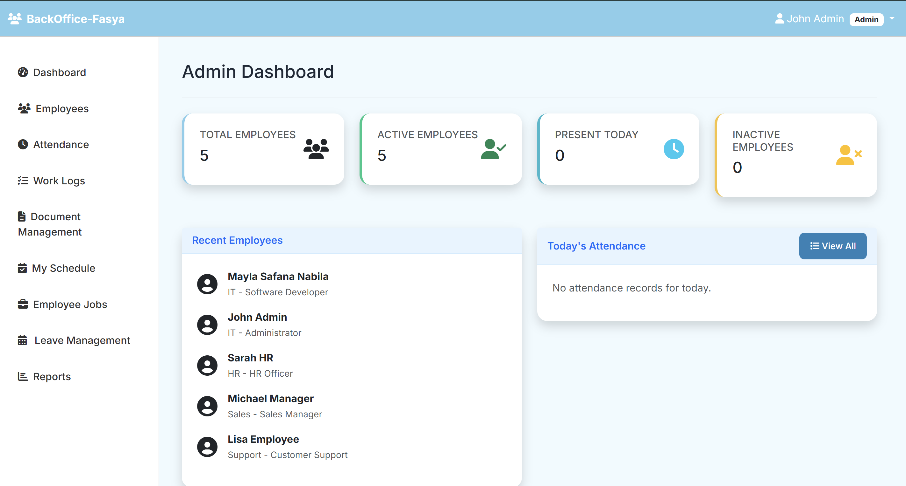
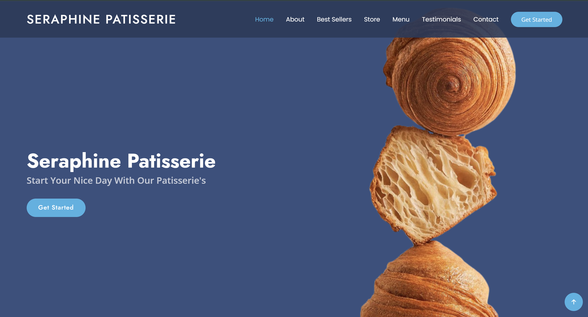
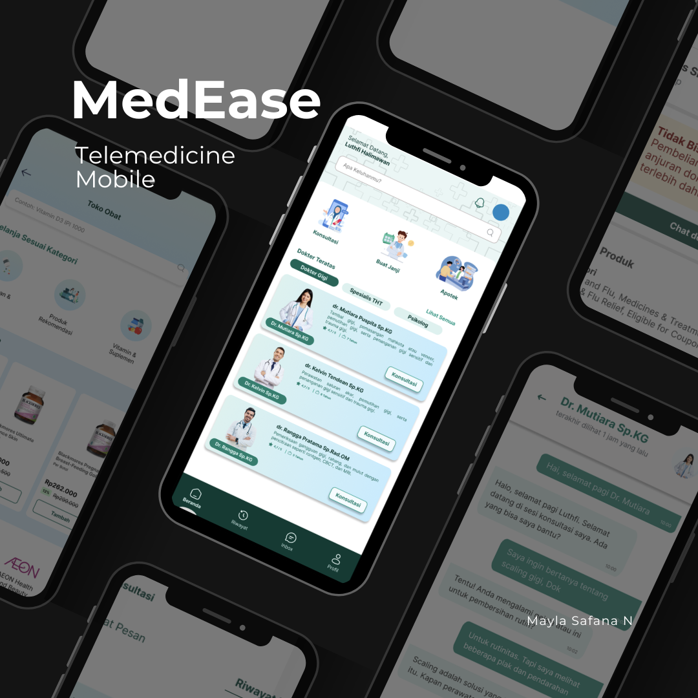
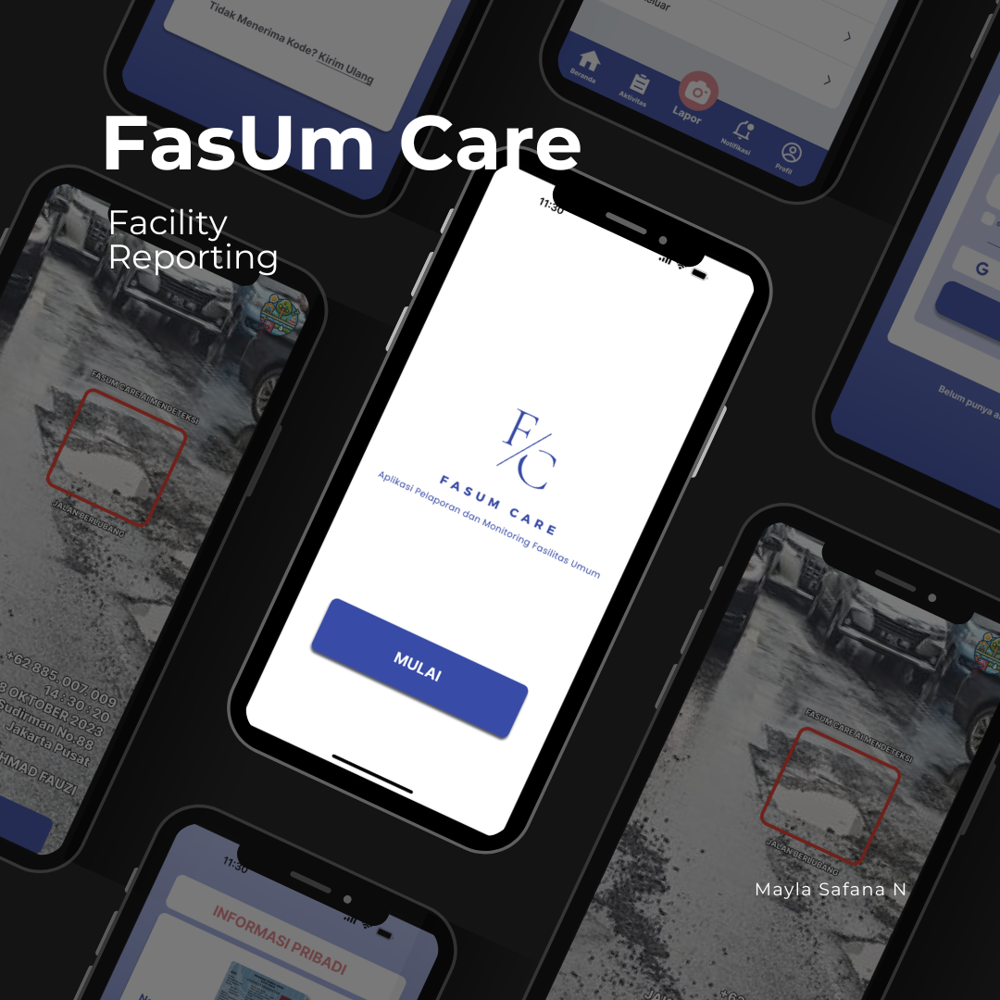
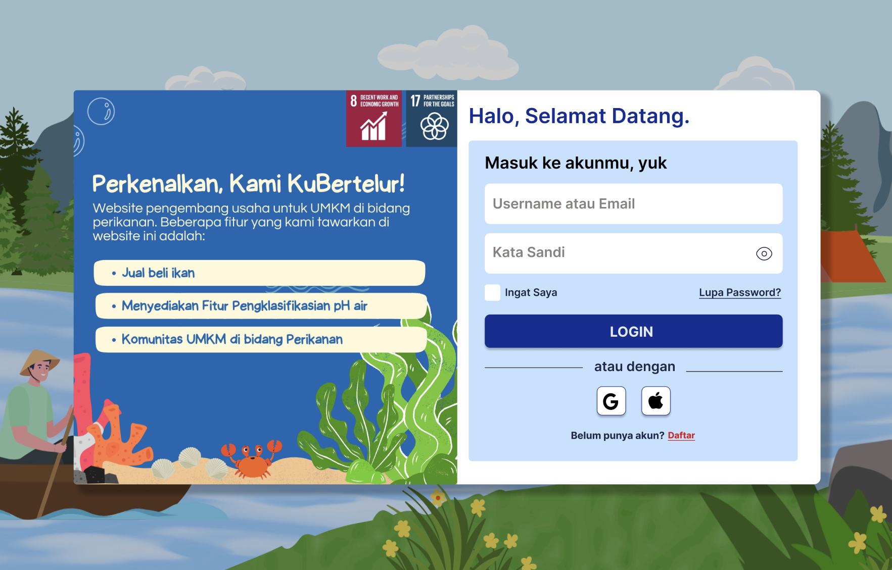
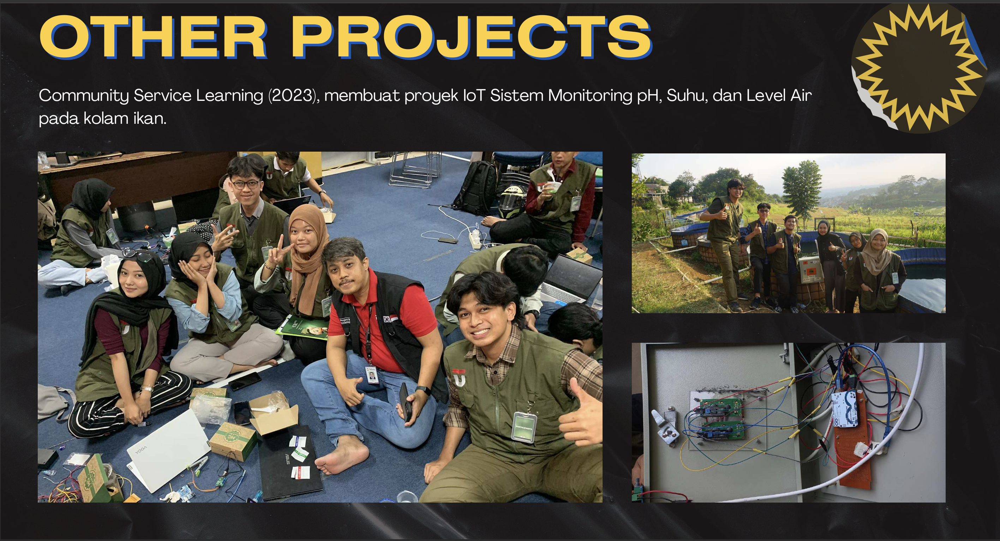

Hi, I am
Mayla Safana Nabila
Frontend & UI/UX Developer
Building digital interfaces that are not only functional, but also deliver a stunning visual experience.
Turning ideas into visual reality.
I am a fresh graduate with a Bachelor’s degree in Information Technology (cum laude) from Telkom University, with a strong interest in web and mobile application development, particularly as a Front-End Developer and UI/UX Designer. I am passionate about building responsive, user-friendly, and intuitive digital experiences that enhance user satisfaction.
Fresh Graduate
Less Than 1 Year Experience
3.88 GPA
Telkom University
Tech Stack & Tools

 JavaScript
JavaScript
 Laravel
Laravel
Work Experience
Frontend Developer Intern
PT Fasya Pratama Solusindo • Jul 2025 - Sep 2025
Developing a web-based employee attendance system interface that integrates with mobile devices, including attendance recording features, attendance data display, and user input validation.
Featured Projects

Internship Project: Backoffice
Developed a back-office management website integrated with a mobile attendance system.

Seraphine Patisserie
Bakery website, built using the following programming languages: HTML+CSS, JavaScript, PHP, and the Laravel framework.

MedEase
Designed the UI/UX concept for a planned healthcare mobile application. The application concept includes online consultation features through chat, voice call, and video call, along with chat review.

Mobile Design: FasUm Care
Designed the UI/UX concept for a planned mobile application that allows users to report damages to public facilities such as roads, street lights, sidewalks, and other infrastructure.

Website Design: Kubertelur
Designed the UI/UX concept for a planned UMKM-based web platform that connects fishermen directly with seafood buyers. The platform also includes a community feature where users can share information and discussions related to aquaculture, such as fish. The intellectual property (HAKI) for KuBertelur has been officially registered.

Other: IoT Projects
Participated in several IoT-based projects focused on smart monitoring systems and community-based technology solutions. In the Community Service Learning project (2023), developed an IoT system for monitoring pH levels, water temperature, and water levels in fish ponds to support aquaculture management and improve monitoring efficiency. Additionally, contributed to the Innovillage project (2023) by developing “TemanSapi,” an IoT-based cattle health monitoring system designed to assist in tracking livestock conditions through real-time monitoring technology.
Open To Work
I am open to job opportunities for Frontend Developer and UI/UX Designer roles. For further inquiries, please contact below: